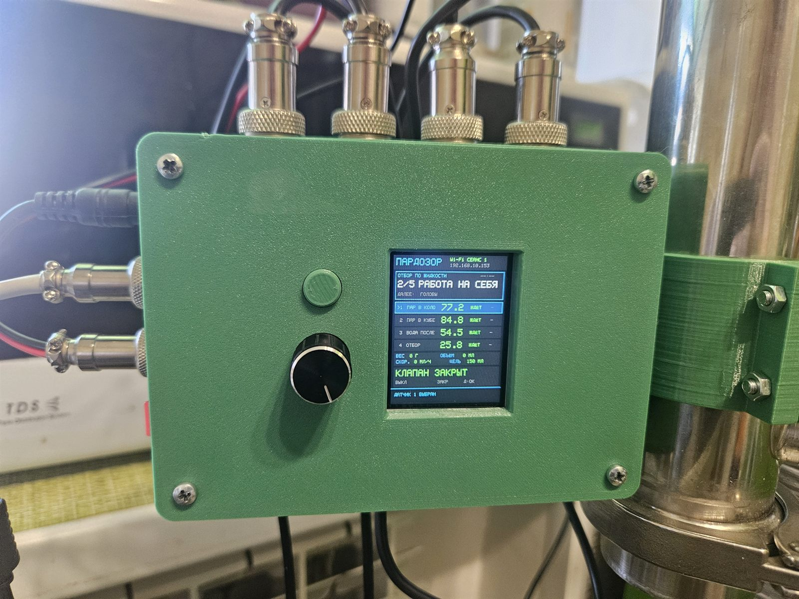

Начало работы 01 из 33
Знакомство с ПарДозором
Что умеет прибор, где находятся органы управления и с чего начать.
Чтение · 2 мин
ПарДозор — прибор для контроля и автоматики перегонки и ректификации. Он объединяет до четырёх температурных каналов, этапы процесса, оповещения, график и журналы. С подключённым клапаном управляет отбором, с весами показывает массу, расчётный объём и скорость.
Работать можно с экрана 2″ или через браузер телефона, планшета и компьютера. Интернет для измерения и автоматики не требуется.

Сначала — три важных различия
- Процесс
- Текущая последовательность этапов и их настроек.
- Шаблон
- Отдельно сохранённый набор настроек, из которого можно создать текущий процесс.
- Сеанс
- Номер записи конкретного запуска/работы, по которому группируются измерения и события.
Карта возможностей
| Возможность | Как пользоваться |
|---|---|
| До 4 температур DS18B20 | Роли и названия, контроль отклонений, поправки по ROM. |
| Процессы и этапы | 7 шаблонов, до 10 этапов, работа на себя. |
| Клапан отбора | 3 режима управления, импульсный отбор, снижение после остановки. |
| Весы | Калибровка и тара, объём, скорость и цель. |
| История и сервис | Журналы и экспорт, отчёт, диагностика, обновление. |
| Повседневная работа | Сохранённые Wi-Fi сети, локальное меню, калькулятор. |
Границы возможностей
Прибор не управляет нагревателем, не измеряет крепость автоматически и не интегрирован с умной розеткой или приводом крана воды. Весы не закрывают клапан при достижении цели. Один настроенный температурный канал управляет одним выходом клапана; названия других каналов сами по себе не назначают им управляющие функции.
Начните с условий безопасной работы, затем выполните первый запуск. Эта инструкция описывает интерфейс прошивки 0.5.0-dev.104. Если меню отличается, посмотрите версию внизу главной страницы или в диагностике.